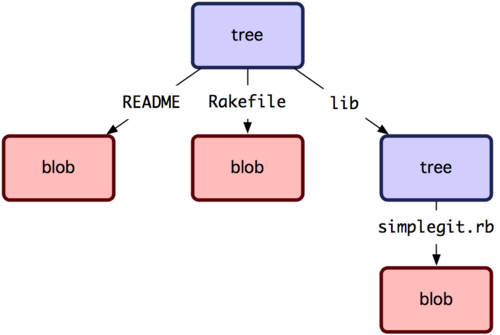

Git 对象¶
Git 是一套内容寻址文件系统。很不错。不过这是什么意思呢？ 这种说法的意思是，Git 从核心上来看不过是简单地存储键值对（key-value）。它允许插入任意类型的内容，并会返回一个键值，通过该键值可以在任何时候再取出该内容。可以通过底层命令 hash-object 来示范这点，传一些数据给该命令，它会将数据保存在 .git 目录并返回表示这些数据的键值。首先初使化一个 Git 仓库并确认 objects 目录是空的:
$ mkdir test
$ cd test
$ git init
Initialized empty Git repository in /tmp/test/.git/
$ find .git/objects
.git/objects
.git/objects/info
.git/objects/pack
$ find .git/objects -type f
$
Git 初始化了 objects 目录，同时在该目录下创建了 pack 和 info 子目录，但是该目录下没有其他常规文件。我们往这个 Git 数据库里存储一些文本:
$ echo 'test content' | git hash-object -w --stdin
d670460b4b4aece5915caf5c68d12f560a9fe3e4
参数 -w 指示 hash-object 命令存储 (数据) 对象，若不指定这个参数该命令仅仅返回键值。–stdin 指定从标准输入设备 (stdin) 来读取内容，若不指定这个参数则需指定一个要存储的文件的路径。该命令输出长度为 40 个字符的校验和。这是个 SHA-1 哈希值──其值为要存储的数据加上你马上会了解到的一种头信息的校验和。现在可以查看到 Git 已经存储了数据:
$ find .git/objects -type f
.git/objects/d6/70460b4b4aece5915caf5c68d12f560a9fe3e4
可以在 objects 目录下看到一个文件。这便是 Git 存储数据内容的方式──为每份内容生成一个文件，取得该内容与头信息的 SHA-1 校验和，创建以该校验和前两个字符为名称的子目录，并以 (校验和) 剩下 38 个字符为文件命名 (保存至子目录下)。
通过 cat-file 命令可以将数据内容取回。该命令是查看 Git 对象的瑞士军刀。传入 -p 参数可以让该命令输出数据内容的类型:
$ git cat-file -p d670460b4b4aece5915caf5c68d12f560a9fe3e4
test content
可以往 Git 中添加更多内容并取回了。也可以直接添加文件。比方说可以对一个文件进行简单的版本控制。首先，创建一个新文件，并把文件内容存储到数据库中:
$ echo 'version 1' > test.txt
$ git hash-object -w test.txt
83baae61804e65cc73a7201a7252750c76066a30
接着往该文件中写入一些新内容并再次保存:
$ echo 'version 2' > test.txt
$ git hash-object -w test.txt
1f7a7a472abf3dd9643fd615f6da379c4acb3e3a
数据库中已经将文件的两个新版本连同一开始的内容保存下来了:
$ find .git/objects -type f
.git/objects/1f/7a7a472abf3dd9643fd615f6da379c4acb3e3a
.git/objects/83/baae61804e65cc73a7201a7252750c76066a30
.git/objects/d6/70460b4b4aece5915caf5c68d12f560a9fe3e4
再将文件恢复到第一个版本:
$ git cat-file -p 83baae61804e65cc73a7201a7252750c76066a30 > test.txt
$ cat test.txt
version 1
或恢复到第二个版本:
$ git cat-file -p 1f7a7a472abf3dd9643fd615f6da379c4acb3e3a > test.txt
$ cat test.txt
version 2
需要记住的是几个版本的文件 SHA-1 值可能与实际的值不同，其次，存储的并不是文件名而仅仅是文件内容。这种对象类型称为 blob 。通过传递 SHA-1 值给 cat-file -t 命令可以让 Git 返回任何对象的类型:
$ git cat-file -t 1f7a7a472abf3dd9643fd615f6da379c4acb3e3a
blob
tree (树) 对象¶
接下去来看 tree 对象，tree 对象可以存储文件名，同时也允许存储一组文件。Git 以一种类似 UNIX 文件系统但更简单的方式来存储内容。所有内容以 tree 或 blob 对象存储，其中 tree 对象对应于 UNIX 中的目录，blob 对象则大致对应于 inodes 或文件内容。一个单独的 tree 对象包含一条或多条 tree 记录，每一条记录含有一个指向 blob 或子 tree 对象的 SHA-1 指针，并附有该对象的权限模式 (mode)、类型和文件名信息。以 simplegit 项目为例，最新的 tree 可能是这个样子:
$ git cat-file -p master^{tree}
100644 blob a906cb2a4a904a152e80877d4088654daad0c859 README
100644 blob 8f94139338f9404f26296befa88755fc2598c289 Rakefile
040000 tree 99f1a6d12cb4b6f19c8655fca46c3ecf317074e0 lib
master^{tree} 表示 branch 分支上最新提交指向的 tree 对象。请注意 lib 子目录并非一个 blob 对象，而是一个指向别一个 tree 对象的指针:
$ git cat-file -p 99f1a6d12cb4b6f19c8655fca46c3ecf317074e0
100644 blob 47c6340d6459e05787f644c2447d2595f5d3a54b simplegit.rb
从概念上来讲，Git 保存的数据如图 9-1 所示。
图 9-1. Git 对象模型的简化版
你可以自己创建 tree 。通常 Git 根据你的暂存区域或 index 来创建并写入一个 tree 。因此要创建一个 tree 对象的话首先要通过将一些文件暂存从而创建一个 index 。可以使用 plumbing 命令 update-index 为一个单独文件 ── test.txt 文件的第一个版本 ── 创建一个 index 。通过该命令人为的将 test.txt 文件的首个版本加入到了一个新的暂存区域中。由于该文件原先并不在暂存区域中 (甚至就连暂存区域也还没被创建出来呢) ，必须传入 –add 参数;由于要添加的文件并不在当前目录下而是在数据库中，必须传入 –cacheinfo 参数。同时指定了文件模式，SHA-1 值和文件名:
$ git update-index --add --cacheinfo 100644 \
83baae61804e65cc73a7201a7252750c76066a30 test.txt
在本例中，指定了文件模式为 100644，表明这是一个普通文件。其他可用的模式有：100755 表示可执行文件，120000 表示符号链接。文件模式是从常规的 UNIX 文件模式中参考来的，但是没有那么灵活 ── 上述三种模式仅对 Git 中的文件 (blobs) 有效 (虽然也有其他模式用于目录和子模块)。
现在可以用 write-tree 命令将暂存区域的内容写到一个 tree 对象了。无需 -w 参数 ── 如果目标 tree 不存在，调用 write-tree 会自动根据 index 状态创建一个 tree 对象。
$ git write-tree d8329fc1cc938780ffdd9f94e0d364e0ea74f579 $ git cat-file -p d8329fc1cc938780ffdd9f94e0d364e0ea74f579 100644 blob 83baae61804e65cc73a7201a7252750c76066a30 test.txt
可以这样验证这确实是一个 tree 对象:
$ git cat-file -t d8329fc1cc938780ffdd9f94e0d364e0ea74f579
tree
再根据 test.txt 的第二个版本以及一个新文件创建一个新 tree 对象:
$ echo 'new file' > new.txt
$ git update-index test.txt
$ git update-index --add new.txt
这时暂存区域中包含了 test.txt 的新版本及一个新文件 new.txt 。创建 (写) 该 tree 对象 (将暂存区域或 index 状态写入到一个 tree 对象)，然后瞧瞧它的样子:
$ git write-tree
0155eb4229851634a0f03eb265b69f5a2d56f341
$ git cat-file -p 0155eb4229851634a0f03eb265b69f5a2d56f341
100644 blob fa49b077972391ad58037050f2a75f74e3671e92 new.txt
100644 blob 1f7a7a472abf3dd9643fd615f6da379c4acb3e3a test.txt
请注意该 tree 对象包含了两个文件记录，且 test.txt 的 SHA 值是早先值的 “第二版” (1f7a7a)。来点更有趣的，你将把第一个 tree 对象作为一个子目录加进该 tree 中。可以用 read-tree 命令将 tree 对象读到暂存区域中去。在这时，通过传一个 –prefix 参数给 read-tree，将一个已有的 tree 对象作为一个子 tree 读到暂存区域中:
$ git read-tree --prefix=bak d8329fc1cc938780ffdd9f94e0d364e0ea74f579
$ git write-tree
3c4e9cd789d88d8d89c1073707c3585e41b0e614
$ git cat-file -p 3c4e9cd789d88d8d89c1073707c3585e41b0e614
040000 tree d8329fc1cc938780ffdd9f94e0d364e0ea74f579 bak
100644 blob fa49b077972391ad58037050f2a75f74e3671e92 new.txt
100644 blob 1f7a7a472abf3dd9643fd615f6da379c4acb3e3a test.txt
如果从刚写入的新 tree 对象创建一个工作目录，将得到位于工作目录顶级的两个文件和一个名为 bak 的子目录，该子目录包含了 test.txt 文件的第一个版本。可以将 Git 用来包含这些内容的数据想象成如图 9-2 所示的样子。

图 9-2. 当前 Git 数据的内容结构
commit (提交) 对象¶
你现在有三个 tree 对象，它们指向了你要跟踪的项目的不同快照，可是先前的问题依然存在：必须记往三个 SHA-1 值以获得这些快照。你也没有关于谁、何时以及为何保存了这些快照的信息。commit 对象为你保存了这些基本信息。
要创建一个 commit 对象，使用 commit-tree 命令，指定一个 tree 的 SHA-1，如果有任何前继提交对象，也可以指定。从你写的第一个 tree 开始:
$ echo 'first commit' | git commit-tree d8329f
fdf4fc3344e67ab068f836878b6c4951e3b15f3d
通过 cat-file 查看这个新 commit 对象:
$ git cat-file -p fdf4fc3
tree d8329fc1cc938780ffdd9f94e0d364e0ea74f579
author Scott Chacon <schacon@gmail.com> 1243040974 -0700
committer Scott Chacon <schacon@gmail.com> 1243040974 -0700
first commit
commit 对象有格式很简单：指明了该时间点项目快照的顶层树对象、作者/提交者信息（从 Git 设置的 user.name 和 user.email中获得)以及当前时间戳、一个空行，以及提交注释信息。
接着再写入另外两个 commit 对象，每一个都指定其之前的那个 commit 对象:
$ echo 'second commit' | git commit-tree 0155eb -p fdf4fc3
cac0cab538b970a37ea1e769cbbde608743bc96d
$ echo 'third commit' | git commit-tree 3c4e9c -p cac0cab
1a410efbd13591db07496601ebc7a059dd55cfe9
每一个 commit 对象都指向了你创建的树对象快照。出乎意料的是，现在已经有了真实的 Git 历史了，所以如果运行 git log 命令并指定最后那个 commit 对象的 SHA-1 便可以查看历史:
$ git log --stat 1a410e
commit 1a410efbd13591db07496601ebc7a059dd55cfe9
Author: Scott Chacon <schacon@gmail.com>
Date: Fri May 22 18:15:24 2009 -0700
third commit
bak/test.txt | 1 +
1 files changed, 1 insertions(+), 0 deletions(-)
commit cac0cab538b970a37ea1e769cbbde608743bc96d
Author: Scott Chacon <schacon@gmail.com>
Date: Fri May 22 18:14:29 2009 -0700
second commit
new.txt | 1 +
test.txt | 2 +-
2 files changed, 2 insertions(+), 1 deletions(-)
commit fdf4fc3344e67ab068f836878b6c4951e3b15f3d
Author: Scott Chacon <schacon@gmail.com>
Date: Fri May 22 18:09:34 2009 -0700
first commit
test.txt | 1 +
1 files changed, 1 insertions(+), 0 deletions(-)
真棒。你刚刚通过使用低级操作而不是那些普通命令创建了一个 Git 历史。这基本上就是运行 git add 和 git commit 命令时 Git 进行的工作 ──保存修改了的文件的 blob，更新索引，创建 tree 对象，最后创建 commit 对象，这些 commit 对象指向了顶层 tree 对象以及先前的 commit 对象。这三类 Git 对象 ── blob，tree 以及 tree ── 都各自以文件的方式保存在 .git/objects 目录下。以下所列是目前为止样例中的所有对象，每个对象后面的注释里标明了它们保存的内容:
$ find .git/objects -type f
.git/objects/01/55eb4229851634a0f03eb265b69f5a2d56f341 # tree 2
.git/objects/1a/410efbd13591db07496601ebc7a059dd55cfe9 # commit 3
.git/objects/1f/7a7a472abf3dd9643fd615f6da379c4acb3e3a # test.txt v2
.git/objects/3c/4e9cd789d88d8d89c1073707c3585e41b0e614 # tree 3
.git/objects/83/baae61804e65cc73a7201a7252750c76066a30 # test.txt v1
.git/objects/ca/c0cab538b970a37ea1e769cbbde608743bc96d # commit 2
.git/objects/d6/70460b4b4aece5915caf5c68d12f560a9fe3e4 # 'test content'
.git/objects/d8/329fc1cc938780ffdd9f94e0d364e0ea74f579 # tree 1
.git/objects/fa/49b077972391ad58037050f2a75f74e3671e92 # new.txt
.git/objects/fd/f4fc3344e67ab068f836878b6c4951e3b15f3d # commit 1
如果你按照以上描述进行了操作，可以得到如图 9-3 所示的对象图。

图 9-3. Git 目录下的所有对象
对象存储¶
之前我提到当存储数据内容时，同时会有一个文件头被存储起来。我们花些时间来看看 Git 是如何存储对象的。你将看来如何通过 Ruby 脚本语言存储一个 blob 对象 (这里以字符串 “what is up, doc?” 为例) 。使用 irb 命令进入 Ruby 交互式模式:
$ irb
>> content = "what is up, doc?"
=> "what is up, doc?"
Git 以对象类型为起始内容构造一个文件头，本例中是一个 blob。然后添加一个空格，接着是数据内容的长度，最后是一个空字节 (null byte):
>> header = "blob #{content.length}\0"
=> "blob 16\000"
Git 将文件头与原始数据内容拼接起来，并计算拼接后的新内容的 SHA-1 校验和。可以在 Ruby 中使用 require 语句导入 SHA1 digest 库，然后调用 Digest::SHA1.hexdigest() 方法计算字符串的 SHA-1 值:
>> store = header + content
=> "blob 16\000what is up, doc?"
>> require 'digest/sha1'
=> true
>> sha1 = Digest::SHA1.hexdigest(store)
=> "bd9dbf5aae1a3862dd1526723246b20206e5fc37"
Git 用 zlib 对数据内容进行压缩，在 Ruby 中可以用 zlib 库来实现。首先需要导入该库，然后用 Zlib::Deflate.deflate() 对数据进行压缩:
>> require 'zlib'
=> true
>> zlib_content = Zlib::Deflate.deflate(store)
=> "x\234K\312\311OR04c(\317H,Q\310,V(-\320QH\311O\266\a\000_\034\a\235"
最后将用 zlib 压缩后的内容写入磁盘。需要指定保存对象的路径 (SHA-1 值的头两个字符作为子目录名称，剩余 38 个字符作为文件名保存至该子目录中)。在 Ruby 中，如果子目录不存在可以用 FileUtils.mkdir_p() 函数创建它。接着用 File.open 方法打开文件，并用 write() 方法将之前压缩的内容写入该文件:
>> path = '.git/objects/' + sha1[0,2] + '/' + sha1[2,38]
=> ".git/objects/bd/9dbf5aae1a3862dd1526723246b20206e5fc37"
>> require 'fileutils'
=> true
>> FileUtils.mkdir_p(File.dirname(path))
=> ".git/objects/bd"
>> File.open(path, 'w') { |f| f.write zlib_content }
=> 32
这就行了 ── 你已经创建了一个正确的 blob 对象。所有的 Git 对象都以这种方式存储，惟一的区别是类型不同 ── 除了字符串 blob，文件头起始内容还可以是 commit 或 tree 。不过虽然 blob 几乎可以是任意内容，commit 和 tree 的数据却是有固定格式的。